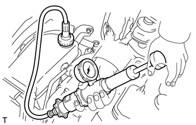
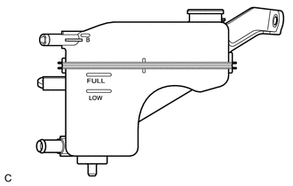

RM3140CG
_51
发动机/混合动力系统
_023971
4ZR-FE 冷却系统
_0122668
冷却系统
G
4ZR-FE 冷却系统 冷却系统 车上检查
注意/小心/提示
- 注意事项：
-
在风扇或散热器格栅分总成附近工作时，确保点火开关置于 OFF 位置。点火开关置于 ON 位置时，如果发动机冷却液温度变高和/或打开空调，则风扇可能自动开始运转。
程序

 1.检查冷却液是否泄漏
1.检查冷却液是否泄漏
- 注意事项：
-
发动机和散热器总成仍很热时，不要拆下储液罐盖。高压高温的发动机冷却液和蒸汽可能会释放出来并导致严重烫伤。
a.
拆下储液罐盖。
b.

2.031,1.521 2.229,1.813
2.229,1.813 2.385,1.813
false
2.448,1.76 2.781,2.01
0.333,0.25
10
*a
| *a | 散热器盖检测仪 |
向散热器总成中加注发动机冷却液，然后安装散热器盖检测仪。
c.
使发动机暖机。
d.
泵吸散热器盖检测仪至 108 kPa (1.1 kgf/cm2, 15.7 psi)，然后检查并确认压力不下降。
·
如果压力下降，则检查软管、散热器总成和发动机水泵总成是否泄漏。
·
如果没有发现发动机冷却液外部泄漏的迹象，则检查加热器芯、气缸体和气缸盖。
e.
拆下散热器盖检测仪。
f.
安装储液罐盖。
2.检查储液罐中的发动机冷却液液位
a.

1.271,0.885 1.823,1.458
1.823,1.458 2.052,1.458
false
1.208,1.083 1.75,1.75
1.75,1.75 1.979,1.75
false
2.094,1.354 2.406,1.51
0.313,0.156
10
false
*a
2.031,1.656 2.344,1.813
0.313,0.156
10
false
*b
| *a | FULL 刻度线 |
| *b | LOW 刻度线 |
发动机冷机时，检查并确认发动机冷却液液位位于 LOW 刻度线和 FULL 刻度线之间。
如果发动机冷却液液位低，则检查是否泄漏并加注发动机冷却液至 FULL 刻度线处。
- 备注：
-
不要用普通的水代替发动机冷却液。
3.检查发动机冷却液质量
- 注意事项：
-
发动机和散热器总成仍很热时，不要拆下储液罐盖。高压高温的发动机冷却液和蒸汽可能会释放出来并导致严重烫伤。
a.
拆下储液罐盖。
b.
检查储液罐盖和散热器储液罐加注口周围是否有过多铁锈或水垢。另外，发动机冷却液应远离油液。
如果发动机冷却液严重脏污，则进行更换。
c.
安装储液罐盖。